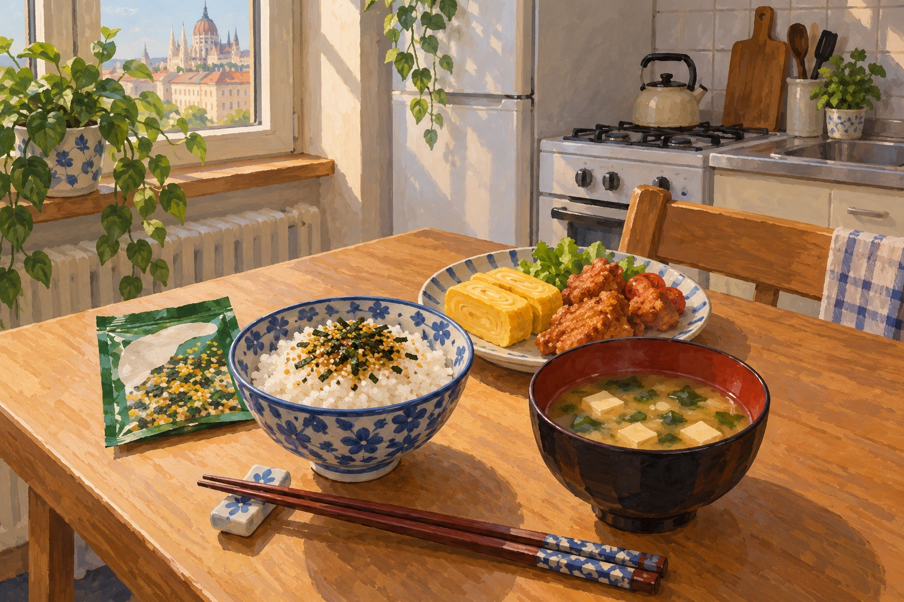

デブレツェンでの食生活リアル！自炊・スーパー事情から外食・食費まで徹底解説【デブレツェン大学CS専攻】
みなさん、こんにちは。ハンガリー留学ラボのユウゴです！
留学生活を送るうえで、勉強と同じくらい（むしろ毎日のテンションを左右するほど！）大切なのが「日々の食生活」ですよね。
「ハンガリーの物価って安いの？外食はいくらくらい？」 「自炊ってぶっちゃけ大変？何を作ってるの？」 「日本食が恋しくなったらどうしてる？」
今回は、僕が実際にハンガリー・デブレツェンで送っているリアルな食生活や、1ヶ月の食費の目安、スーパーの使い分けやおすすめの節約術まで丸ごと公開しちゃいます！
1. ハンガリーの外食は高い！？リアルな1日の食事と食費
結論から言うと、現在のハンガリーでの外食は日本よりも割高です！
普通にお店でお腹いっぱい食べようと思うと、最低でも1,500円はかかります。相場としては1食あたり2,000円〜3,000円ほど。そのため、留学費用を抑えるためには「基本的に自炊」がベースになります。
僕の普段の1日の食事スタイルはこんな感じです。
- 朝食： 食べずに大学へ行くことが多いです。途中のスーパーで焼きたてのパンを買ってかじることもあります。
- 昼食： 大学内で約500円で買える少し大きめのホットドッグがお気に入りでよく食べています！午後も授業がある日は図書館にこもるため、大学内でサッと済ませることが多いです（たまに家に帰れる日はパスタを作ったりします）。
- 夕食： 基本は家で自炊！
1ヶ月の食費の目安としては、だいたい3万円〜4万円くらいです。 かなり節約を意識すれば2万円〜3万円弱に抑えることも可能ですが、外食が増えたりスーパーでパンをこまめに買ったりすると4万円近くになります。
※疲れた日の味方！デリバリーアプリの神キャンペーン
テスト前やどうしても疲れて自炊したくない時は、ハンガリーで定番のフードデリバリーアプリ「foodora」を使います。
このアプリ、たまに「1+1（1つの値段で2つ届く）」という神キャンペーンをやっているんです！そういう時はバーガーキングやケンタッキーを注文して、お得に贅沢しちゃいます（笑）。
2. スーパー事情と日用品・食材の買い出し
僕がデブレツェンでよく利用しているスーパーは「Coop」と「Spar」の2つで、用途に合わせて使い分けています。
- Coop（ほぼ毎日通う）： 家のすぐ近くにあるので、朝食や軽食用のパン、飲み物、トイレットペーパーやティッシュなどの日用品を買いに行きます。
- Spar（週1回まとめ買い）： 少し離れた大きめの店舗に行き、お米、お肉、野菜、フルーツなどの食材を一気に買い出しします。
スーパーの商品の値札やパッケージは当然すべてハンガリー語表記です！最初は「これ何のお肉？」「どれが砂糖でどれが塩？」と迷うので、スマホの「Googleレンズ」でカメラをかざしてリアルタイム翻訳しながら買い物をしています。これさえあれば買い物で困ることはありません！
3. 自炊メニューと「日本食恋しい問題」の解決法
「自炊って毎日凝った料理を作ってるの？」と思われそうですが、全然そんなことはありません（笑）。
僕の夕食は、日本から持ってきたパスタソースやインスタントのお味噌汁、ふりかけに頼ることがほとんどです。おかずも「卵焼き」「豚肉を焼いただけのもの」「玉ねぎとジャガイモの炒め物」など超シンプル！時間にゆとりがある日だけ、唐揚げを作ったりしています。
日本食が恋しくなった時はどうする？
デブレツェンにもアジアンスーパーはあるのですが、9割が中国や韓国の食材で、日本のものはあまり置かれていません。売っていてもかなり割高です。
そのため、日本食が食べたくなった時は日本から持参した調味料を使って自炊するのが一番です！わざわざ凝った和食を作らなくても、だし巻き卵や唐揚げを作ったり、即席のお味噌汁を飲んだりするだけで、案外満足できますよ。慣れ親しんだ日本の調味料は絶対に持参するのがおすすめです！

4. これから渡航するみなさんへアドバイス
「留学前に料理の練習をしておいた方がいいかな…？」と心配する人も多いですが、今の時代、クックパッドやYouTubeでネット検索すれば何でも作れるので事前に練習しなくても大丈夫です！ ただし、「実家のあの味（おふくろの味）が好き！」という特定の料理がある人は、お母さんや家族に作り方を聞いて日本で一度作っておくと、現地でもスムーズに再現できると思います。
あと、持参する荷物に余裕があれば「日本っぽい食器（お茶碗や和風のお椀）」を1セット持っていくのが個人的にすごくおすすめです！ いつもの自炊料理でも、和食器に盛り付けるだけで「雰囲気」から日本を感じられて、ホッと心が癒されます（笑）。
無理のない自炊と賢い買い物で、楽しくおいしいハンガリー生活を送ってくださいね！